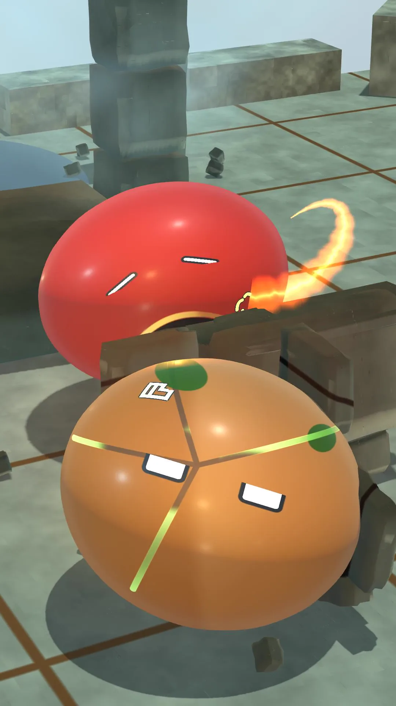
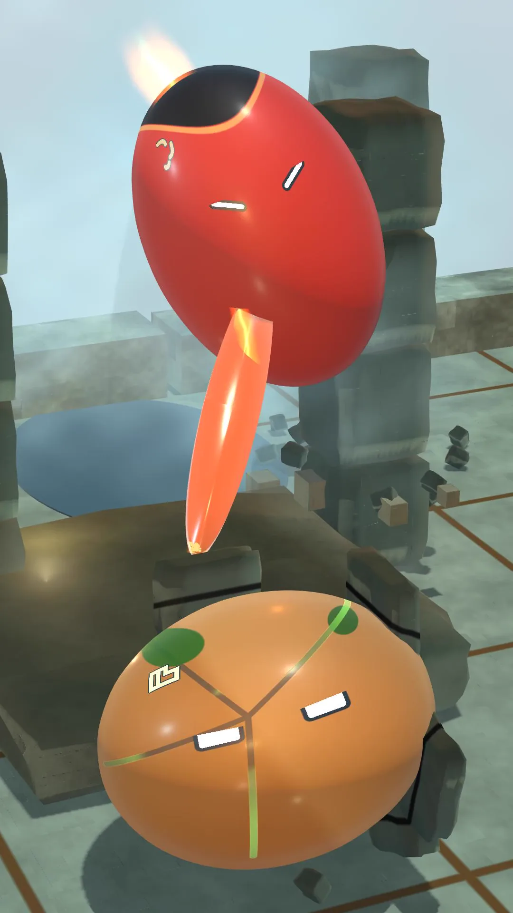

A cleaner reference fight
We have withdrawn the short video from this reference-fight update because the action is too confusing. Frequent angle changes, crowded fighters and weak plasma shapes make the exchange hard to follow. These work-in-progress stills remain for comparison while we rebuild the sequence.
The matched contact frames show a reduction in steam, sparks and speed lines. That improves one paused image, but it does not make the moving fight clear. The pale highlights and cramped composition also need correction.
The next version will hold a continuous camera view for longer, keep readable space between the fighters and show the original eye glyphs at a larger size. Squash must recover quickly. The plasma needs a broad, layered flow rather than a thin orange stripe, with exposure that preserves the orbs' colour and detail.
We will review the full sequence as a contact sheet before sharing another video. These images are authored reference-animation WIP, not a player or AI gameplay demonstration. Hands-on play still needs a reliable visible game window. M1 remains in progress, and the Gallery has no approved fight film yet.
Inside the work


